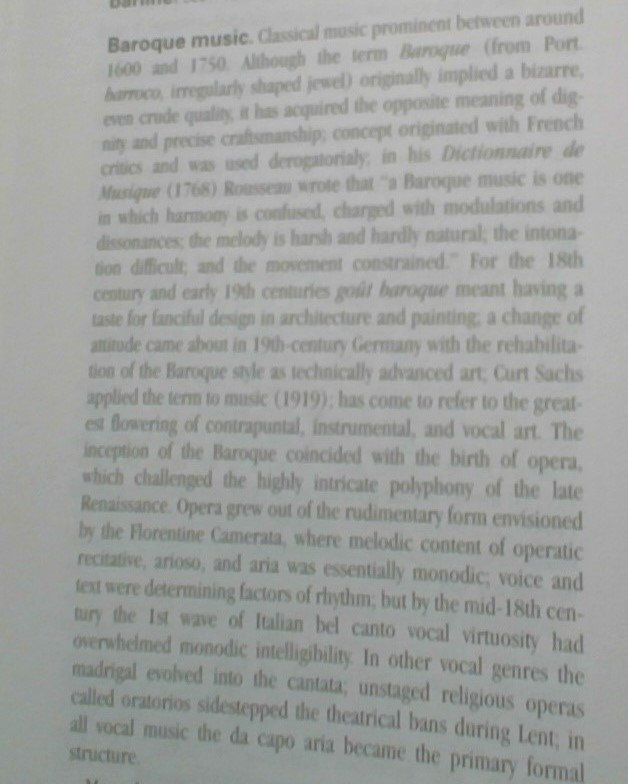

Put
Ad
Here ?
¿
"Bird on the horizon,
sittin' on a fence,
He's singin' a song for me,
at his own expense."
Every ad,
under your skin,
so sad,
plundering thin,
the most intimate spying,
never dying,
make 'em lose,
then humbly win.
"Deep down in Lu'siana, close to New Orleans,
way back up in the woods among the evergreens,
there stood a log cabin made of earth and wood,
where lived a country boy named Johnny B. Goode,
who never ever learned to read or write so well,
but he could play a guitar just like a-ringin' a bell,"
~ Johnny B. Goode
"Ever since I was a young boy,
I've played the silver ball,
From Soho down to Brighton,
I must've played 'em all,
Well, I ain't seen nuthin' like him
in any amusement hall,
That deaf, dumb and blind kid
____ _____ _ ____ _______."
~ Name That Tune
Psycho spies,
tracking eyes,
automated thought-logging.

the bassline of "Rondino" by Jean-Philippe Rameau (1683-1764)
Thank you, Alfred's Premier Piano Course, Lesson 5
When I first started practicing the paradiddle, I hit each note independently, like a caveman.
I did not think of bouncing the stick.
My latest band: "The Impossibles"
"Your fingers weave quick minarets,
Speak in secret alphabets,
I light another cigarette,
Learn to forget,"
~ Name That Doors Tune
Well, now let's talk about it.
Eeeeeeeeeeeeeeaaaaaaaaaasssy!
"Time is generous,
more,
take more,"
~ Pete Townsend, "Outlive the Dinosaur"
"I don't feel tardy."
~ Name That VH song
The ad told me I should be someone else.
innuendo: suggestion
"I'd like to be,
under the sea,"
~ Name That Richard Starkey Tune
"Nevermind the man behind the curtain."